Исторические и справочные гербы


Los Angeles
Путеводитель. Объектов в этом выпуске: 34.
OTIUM — практика нарочитого досуга. В античном смысле otium — не побег от работы, а время, когда внимание возвращается к памяти, пейзажу и мысли — без прикладного дедлайна.
Мы выстраиваем маршруты для неспешного присутствия, а не для чек-листа достопримечательностей: важно быть в месте, а не «потреблять» виды.
OTIUM — не туроператор. Это приглашение пройтись, остановиться и оставить маршрут незавершённым, если свет на фасаде заслуживает ещё минуты.
Исторические и справочные гербы
Путеводитель. Объектов в этом выпуске: 34.
Лос-Анджелес — крупнейший город Калифорнии и второй по населению в США.
Испанские миссии, нефть, киноиндустрия Голливуда и авиация сформировали растянутую агломерацию. Океан, каньоны и этнические кварталы сочетаются с мировым центром развлечений и технологий.
Вторая мировая война усилила авиастроение; после 1945 года пригороды росли автомобильные магистрали. Лос-Анджелес остаётся центром кино, музыки и иммиграции из Азии и Латинской Америки, с постоянным поиском решений транспортных и экологических проблем.

Экспозиция космического шаттла «Эндейвер» с интерактивными галереями и набросанными временными шкалами миссий. Для посещения павильона для трансфера в пиковые праздничные даты по-прежнему требуется предварительное бронирование. Сад роз в Парке Экспозиция расположен к западу для пикников.
Endeavour летал по улицам Лос-Анджелеса в 2012 году, прежде чем быть наклоненным в экспозицию «Вертикальная стена» (Vertical Stack). Якорь оборудования НАСА в музее-рядке ЭКСПО-парка.
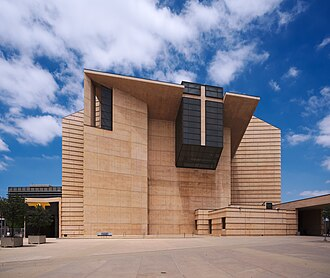

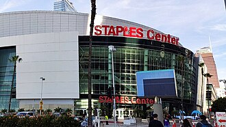
Crypto.com Arena — современный спортивный и развлекательный комплекс, расположенный в центре Лос-Анджелеса и известный своим элегантным дизайном и современными удобствами. Обладает вместимостью более 18 000 человек на баскетбольных матчах и до 20 000 на концертах. Здание оснащено выдвижными секциями сидений и инновационными светодиодными системами освещения. Его уникальная архитектура включает большой атриум и стеклянный фасад, которые усиливают естественное освещение в течение дневных мероприятий. Арена принимала множество громких мероприятий, таких как NBA All-Star Game и церемония вручения премии «Грэмми». Это демонстрирует эко-технологии, включая энергосберегающее освещение и водосберегающие функции.
Открывшийся в 2016 году Crypto.com Arena заменил Staples Center в качестве домашней арены для команд НБА «Лос-Анджелес Лейкерс» и НХЛ «Лос-Анджелес Кингс». Дизайн арены разработала компания Populous, которая придала ей футуристический вид, сочетающий передовые технологии и элементы устойчивого развития. Эта знаковая арена принимает крупные спортивные мероприятия, концерты и культурные представления, что делает ее обязательным местом для посещения как фанатами, так и туристами.
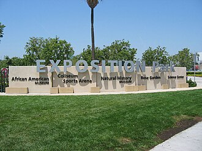

Объединение европейской живописи, иллюминированных манускриптов и декоративно-прикладного искусства, доступное на трамвае от подземной парковки. Вход бесплатный; в выходные дни может потребоваться бронирование транспорта по расписанию. Сад кактусов выходит окнами на взлётно-посадочные полосы и тихоокеанский морской слой.
Фонд Дж. Пола Гетти объединил программы от виллы в Малибу до этого пожароустойчивого архива и галерей на вершине холма. Самое посещаемое в Лос-Анджелесе место, куда можно попасть без платы.


Древности и сады, стилизованные под везувианские виллы, доступны по предварительному бронированию от PCH. Билеты со временем/временные билеты отделены от Brentwood Getty Center. Сад трав представляет древние средиземноморские растения.
Музей Пола Гетти в Малибу был перестроен с соблюдением более строгих сейсмических и противопожарных норм. Коллекция классических объектов на побережье отличается от кампуса на холме.


Общественная обсерватория с демонстрациями телескопов Zeiss, шоу катушек Тесла и бесплатными астрономическими экспозициями над смогом бассейна Лос-Анджелеса. На закате террасы заполняются толпой, чтобы полюбоваться огнями центра. Парковка заполнена в выходные; шаттл DASH связывает с Vermont Metro.
Здание было профинансировано по завещанию Гриффита в качестве подарка общественности. Фрески эпохи WPA посвящены науке. Железобетонная икона гражданского оптимизма эпохи Великой депрессии.

Вестилочные палубы позволяют сделать телеобъективные снимки знака Голливуда над хребтами Лос-Фелис. Программы планетария раскупаются в праздничные выходные. Парковка на закате может потребовать только верхних ярусов.
Публичные ночи с телескопом продолжают миссии по популяризации знаний, начатые в эпоху WPA. Классическое обрамление знаками без незаконного вторжения на склоны холмов.

На площади перед Театром TCL Chinese Theatre расположены принты и звездные мемориальные plaques вдоль оживленных сувенирных лавок. Уличные артисты ожидают чаевых за фотографии. Выход на линии метро B находится на пересечении улиц Hollywood и Highland.
Театральный район пришел в упадок, а затем был перезапущен благодаря туризму и реинвестициям метро. Попкультурный паломнический маршрут, ведущий к холмам.

На склоне холма расположены буквы, изначально складывающиеся в надпись «Hollywoodland». Для телеобъективных снимков служат обзорные точки обсерватории Гриффита и каньона Бичвуд. Ближайшие подходы огорожены; разрешенные маршруты включают хребты Гриффит-парка. Гондолы на вертолете облетают гребень для воздушных ракурсов.
Реклама недвижимости эпохи депрессии стала эмблемой киноиндустрии после признаков износа и частичного демонтажа. Глобальный синоним американской индустрии развлечений.


На активном асфальте расположены выставки палеолитических находок и воссозданные прогулочные маршруты по плейстоценовому саду. Из проекта 23 до сих пор извлекаются кости с археологических раскопок строительного периода. Спектакль «Ice Age Encounters» показывается в 3D кинотеатре по выходным.
Нефтяные просачивания замуровали животных на тысячелетия; экспедиции Хэнкока превратили ямы в общественную науку. Рабочий местонахождение окаменелостей рядом с кампусом художественного музея округа.
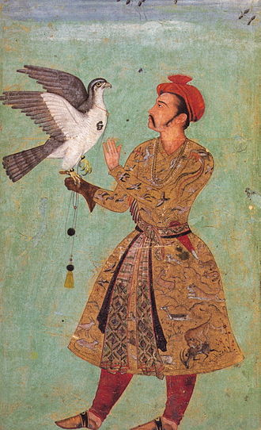
Расположенный в самом сердце Музейного Ряда Лос-Анджелеса, LACMA — одно из самых известных художественных учреждений Америки. Обладая более чем тремя миллионами работ, охватывающих века и континенты, музей демонстрирует шедевры от древних цивилизаций до произведений современных художников. Основан Уильямом Эндрюсом Кларком-младшим, который пожертвовал его обширную художественную коллекцию округу. Музей прошел масштабную реконструкцию в конце XX века, в результате чего расширились выставочные пространства и улучшилась доступность. Значительные постоянные коллекции включают египетские артефакты, европейскую живопись и современное искусство. LACMA проводит временные выставки, посвященные новым художникам и передовым тенденциям в современном искусстве. Предлагает бесплатный вход в определенные дни каждого месяца.
Основанный в 1913 году как Музей округа Лос-Анджелес (Los Angeles County Museum), LACMA превратился в глобальный центр искусства и культуры. Его коллекция включает значимые произведения как западных, так и незападных традиций, что делает его жизненно важным культурным центром для Южной Калифорнии. Посетите LACMA, чтобы погрузиться в мировое искусство, познакомиться с разнообразными культурами и насладиться выставками, вызывающими размышления.
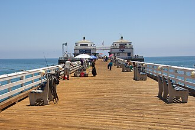
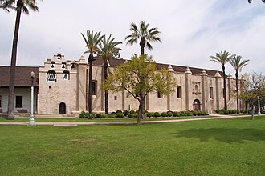
Миссия Сан-Габраэль-Арканхель — католическая миссия и исторический памятник в Сан-Габраэле, Калифорния.
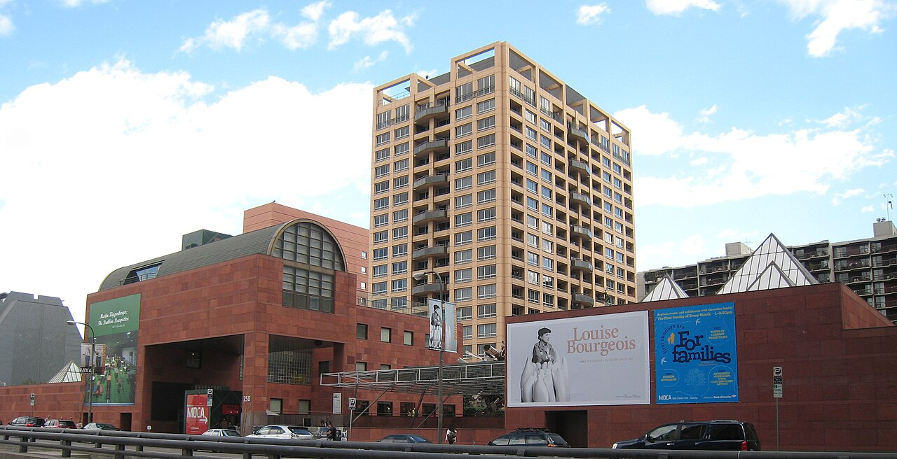
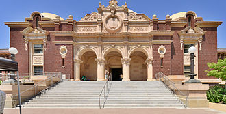
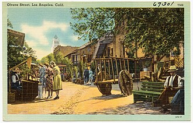

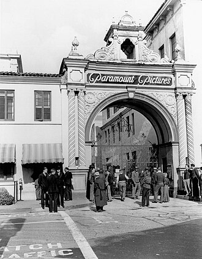
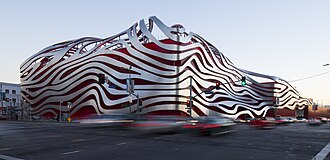
Музей автомобилей Петерсена (The Petersen Automotive Museum) — это музей автомобилей, расположенный на бульваре Уилшир (Wilshire Boulevard) вдоль Музейного проспекта (Museum Row) в районе Миракел Майл (Miracle Mile) Лос-Анджелеса. Являясь одной из крупнейших в мире коллекций, Музей автомобилей Петерсена — это некоммерческая организация, специализирующаяся на истории автомобилестроения и связанных образовательных программах. История: Основан 11 июня 1994 года издателем журналов Робертом Э.
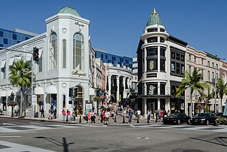
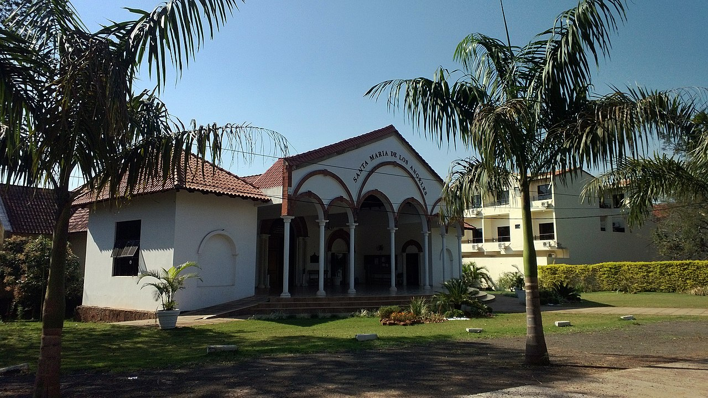

На колесе Ferris-wheel в Пасифик-парке и знаке «Конец тропы» Route 66 собираются толпы на закате; на тротуарах выступают уличные артисты. Велосипедная тропа начинается от пирсовой рампы. При сильных зимних волнах могут быть закрыты нижние палубы по соображениям безопасности.
Мниципальный пирс пережил конкурс частных пирсов; реставрация карусели сохраняет ДНК ярмарочной культуры начала XX века. Набережная общественная зона между утесами Малибу и траекториями полетов аэропорта Лос-Анджелеса.
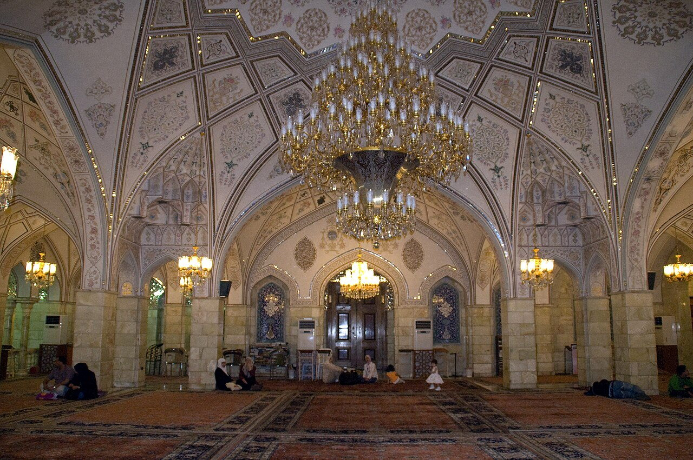
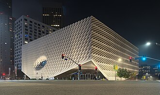
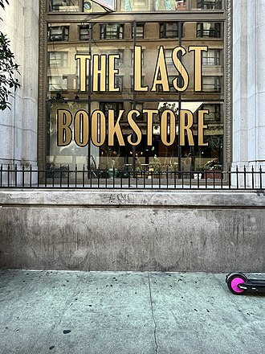
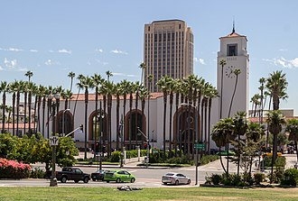

Метро Красная Линия выходит в ночную жизнь CityWalk перед воротами. Проездные билеты сокращают время ожидания в очереди в пиковые летние субботы. Туры по студиям времен Лью Уоссермана превратились в полноценный тематический парк над перевал Кахуенга. Аттракционы со студийным брендингом видны с шоссе 101.

Парковка на выходные дни заполняет боковые улицы к востоку от Пасифик. Скульптура зеленой черепахи знаменует площадь скейт-танца. Каналы уменьшились, но бордвоковая культура выжила как уличная театральная полоса Лос-Анджелеса. Прибрежная контркультура рядом с офисами Силиконового пляжа.

Родовая сцена Филармонии ЛА с винными местами и органным остеклением, интегрированные в изогнутый деревянный интерьер Гери. Экскурсии по архитектуре объясняют настройку панелей после ранних проблем с бликами. Сезоны хора «LA Master Chorale» проходят в зале совместно с посещающими оркестрами.
Пожертвование Лиллиан Диズニー стимулировало десятилетия сбора средств и инженерные работы для реализации сложной металлической обшивки. Культурный центр в центре города, расположенный после 2000 года, рядом с Музыкальным центром.